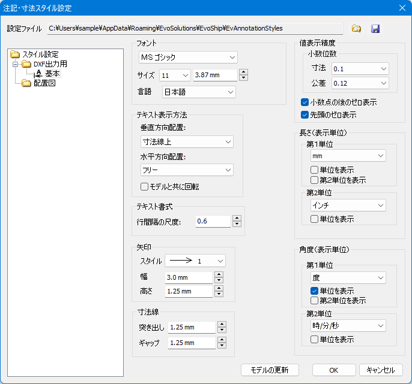
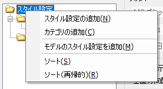
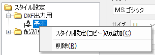

注記や寸法の各種パラメータは、要素ひとつひとつに設定することもできますし、スケッチや図面にまとめてパラメータを設定しておいて、注記や寸法はみずからが属するスケッチに設定しておいたパラメータを参照するようにもできます。この「まとめて設定しておくパラメータ」のことを注記スタイルといいます。
「注記・寸法スタイル設定」ウィンドウで作成した注記スタイルは、システム設定として保存されます。注記スタイルをスケッチや図面に適用すると、スケッチや図面はそのスタイルのコピーを保持します。スケッチや図面にスタイルを適用してから、「注記・寸法スタイル設定」ウィンドウでそのスタイルを編集しても、スケッチや図面が保持している「コピーされた」スタイルは変更されません。

左側のスタイル一覧が表示されている欄でコンテキストメニューを表示し、「スタイル設定の追加」をクリックします。また、「モデルのスタイル設定を追加」をクリックすると、いま開いているモデル内のスケッチや図面が保持している注記スタイルがすべてスタイル一覧に追加されます。

また、既存のスタイルを元にして新しくスタイルを作りたい場合は、スタイルを選択してコンテキストメニューを表示し、「スタイル設定（コピー）の追加」をクリックします。
ウィンドウ右下の「モデルの更新」ボタンをクリックすると、「注記・寸法スタイル設定」ウィンドウで管理している（システム設定として保存されている）各スタイルについて、スケッチや図面に適用ずみのスタイルで同名のものがあると、その適用ずみスタイルをシステム設定のスタイルで上書きします。
スタイル一覧に同名のスタイルが複数存在すると、それらのうちひとつだけが適用ずみスタイルの上書きに使われて、残りは無視されてしまいます。同名のスタイルを作るのはできるだけ避けるようにしてください。